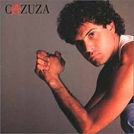

TOP CINCO MÚSICAS MAIS OUVIDAS NO MÊS DE JULHO

TOP 1: Just Two Of Us de Bill Withers e Grover Washington Jr.

TOP 2: Mina de Condominio de Seu Jorge

TOP 3: BYOB de System of a Down

TOP 4: Exagerado de Cazuza